-
Payment
16:22:49 PM / 35:30:267 Fail
Payment
01.13.2025 16:22:49 01.13.2025 16:28:19 35:30:267 · #test-id=2FailInternal transferWhen close all the other opened windowsWhen User opens the T24 Url Then User should be able to login to T24
Then User should be able to login to T24 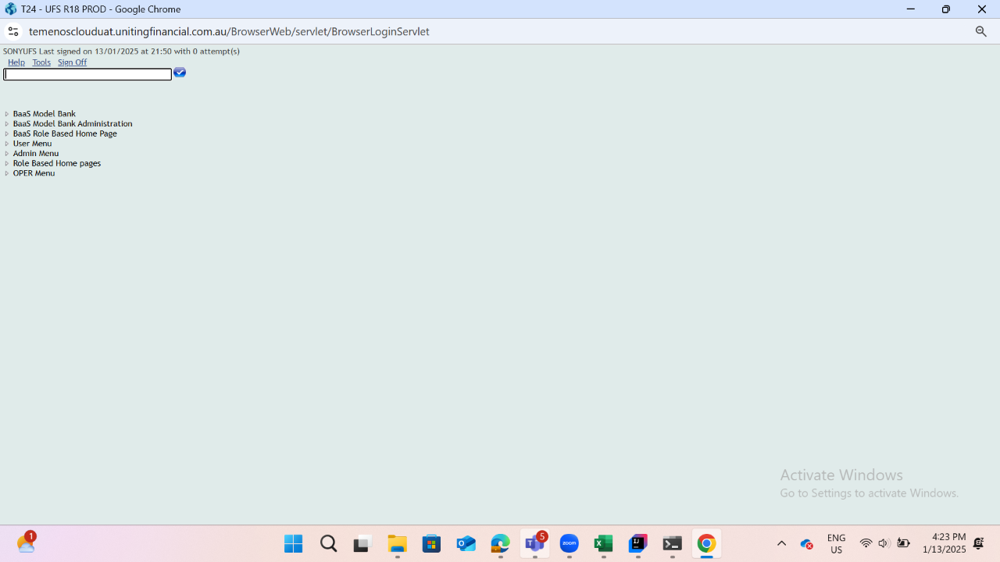
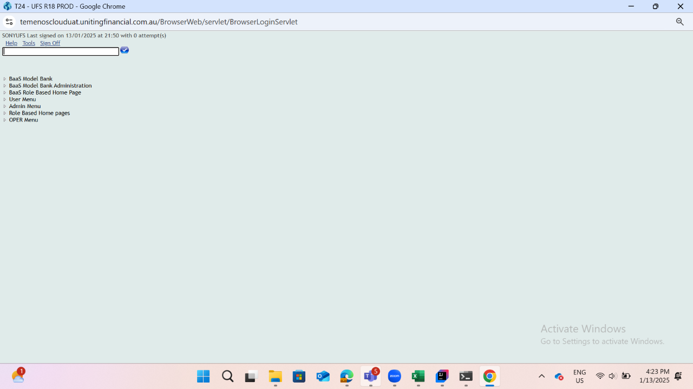 Then The user should be able to fill the commandlineAnd user should be able to see the the balance of the account before performing internal transfer
Then The user should be able to fill the commandlineAnd user should be able to see the the balance of the account before performing internal transfer com.frameium.stepdef.Hooks.afterEveryStep(io.cucumber.java.Scenario)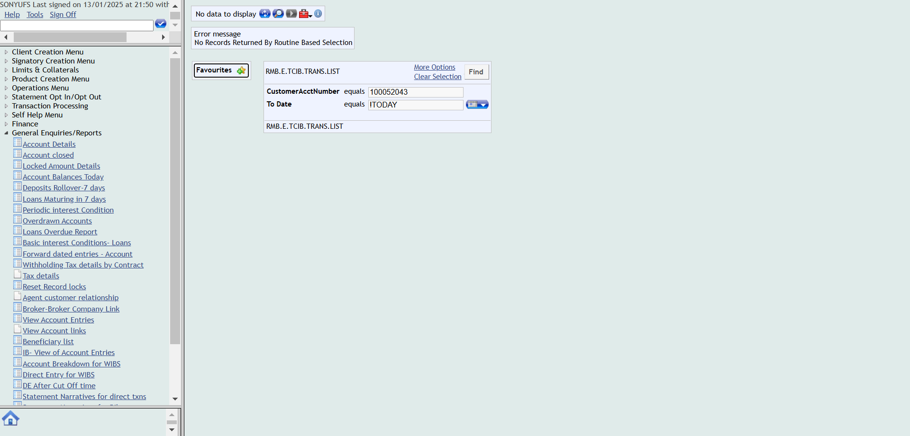Then The user should be able to navigate to Account transfer buttonStep skippedAnd Enter the details in the account transfer fieldsStep skippedThen Click on validateStep skippedAnd Click on commitStep skippedThen Verify whether the transaction complete message is displayed after commitingStep skippedAnd Navigate to account entriesStep skippedThen Enter the account number and click on find buttonStep skippedAnd Verify whether the transaction is reflected in the accountentriesStep skippedFailInternal Transfer narrativeWhen close all the other opened windowsWhen User opens the T24 Url
com.frameium.stepdef.Hooks.afterEveryStep(io.cucumber.java.Scenario)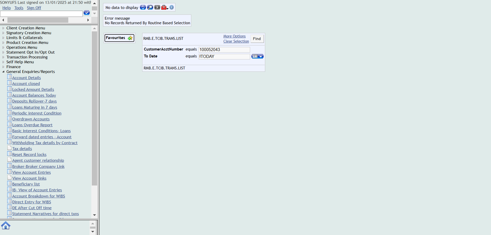Then The user should be able to navigate to Account transfer buttonStep skippedAnd Enter the details in the account transfer fieldsStep skippedThen Click on validateStep skippedAnd Click on commitStep skippedThen Verify whether the transaction complete message is displayed after commitingStep skippedAnd Navigate to account entriesStep skippedThen Enter the account number and click on find buttonStep skippedAnd Verify whether the transaction is reflected in the accountentriesStep skippedFailInternal Transfer narrativeWhen close all the other opened windowsWhen User opens the T24 Url Then User should be able to login to T24
Then User should be able to login to T24 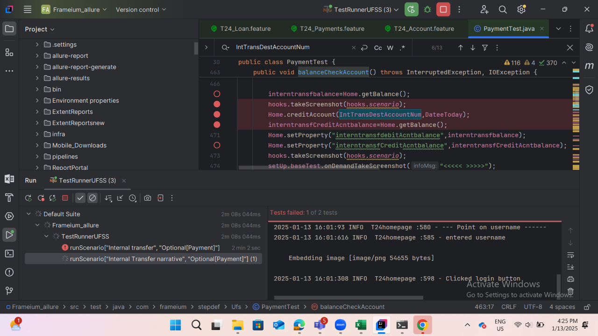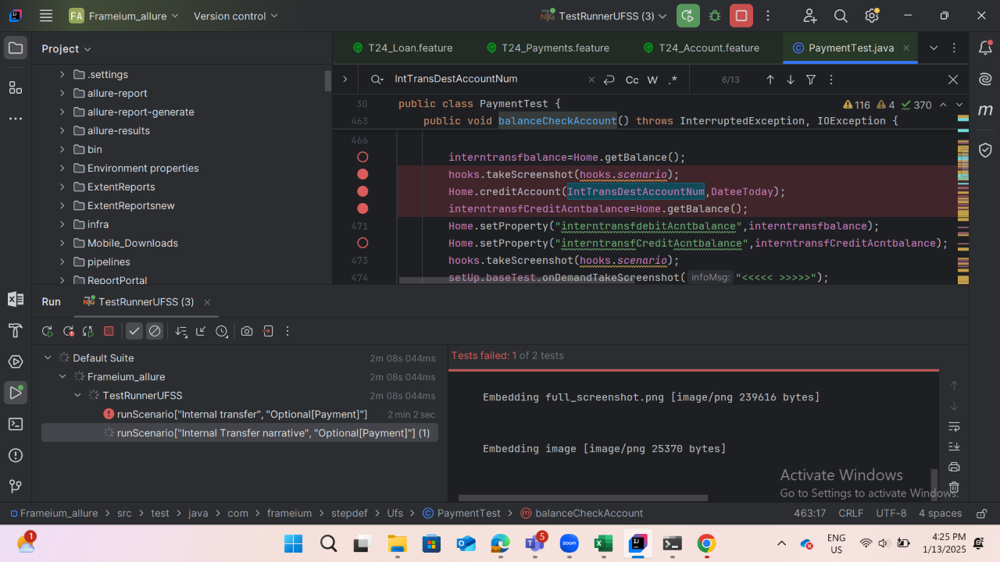Then The user should be able to fill the commandlineAnd The user should be able to click on general enquiries buttomAnd click on the IB-view of account entriescom.frameium.stepdef.Hooks.afterEveryStep(io.cucumber.java.Scenario)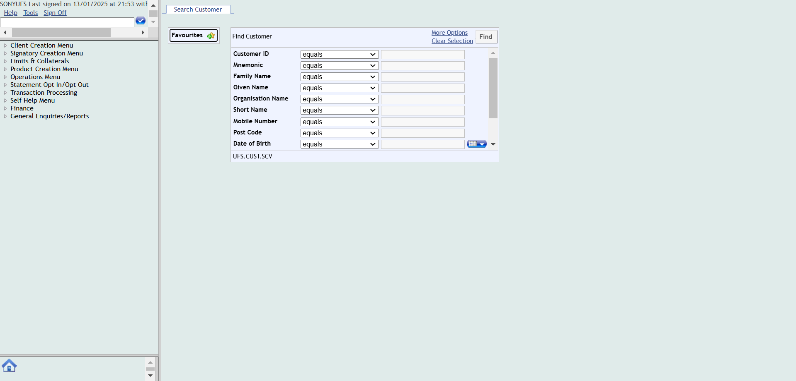Then Enter the account numberStep skippedAnd click on find buttonStep skippedAnd The details of internal transfer should be reflected in the narrativesStep skippedFailExternal transfer over limitWhen close all the other opened windowsWhen User opens the T24 Url
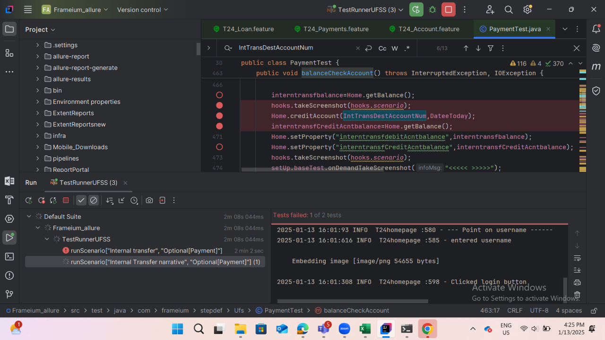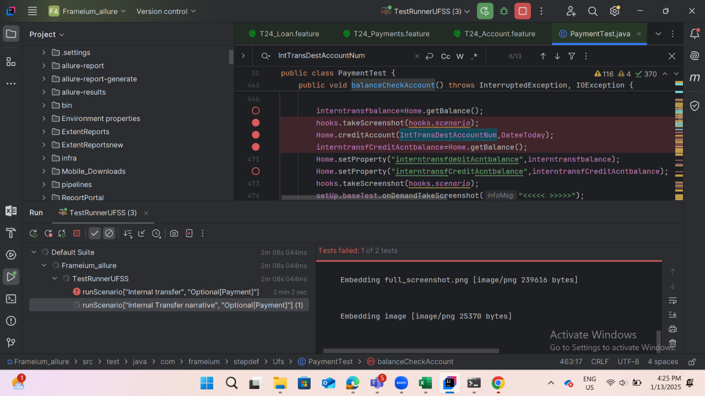Then The user should be able to fill the commandlineAnd The user should be able to click on general enquiries buttomAnd click on the IB-view of account entriescom.frameium.stepdef.Hooks.afterEveryStep(io.cucumber.java.Scenario)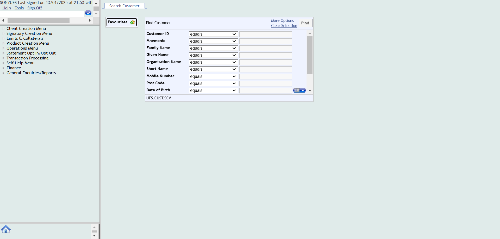Then Enter the account numberStep skippedAnd click on find buttonStep skippedAnd The details of internal transfer should be reflected in the narrativesStep skippedFailExternal transfer over limitWhen close all the other opened windowsWhen User opens the T24 Url Then User should be able to login to T24
Then User should be able to login to T24
 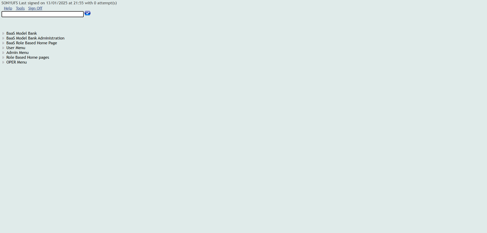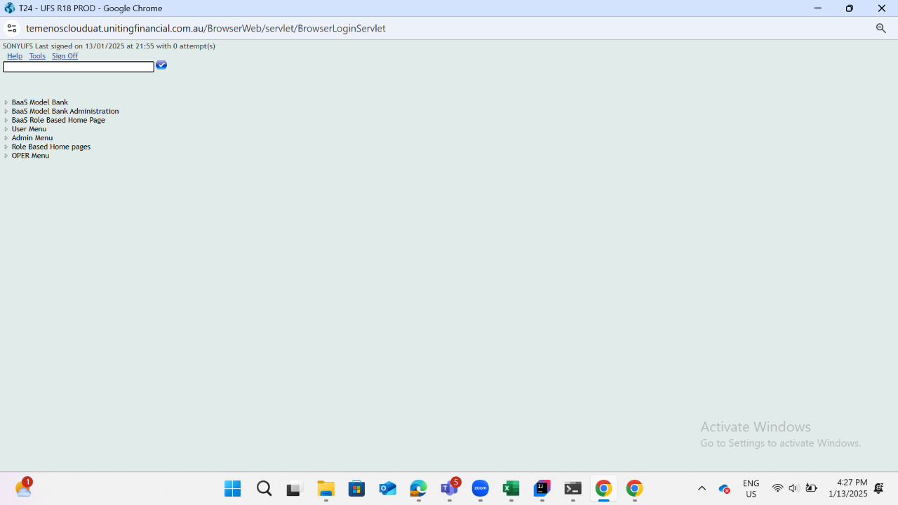Then The user should be able to fill the commandlineAnd user should be able to see the the balance of the account before performing internal transfercom.frameium.stepdef.Ufs.IBPayments.afterStep(io.cucumber.java.Scenario)com.frameium.stepdef.Hooks.afterEveryStep(io.cucumber.java.Scenario)Then The user should be able to navigate to Account transfer buttonStep skippedAnd Enter the details in the account transfer for External transfer overlimitStep skippedThen Click on validateStep skippedAnd Click on commitStep skippedThen check whether the override Authorisation Required message is appearing and click on acceptoverrideStep skippedThen Verify whether the transaction complete message is displayed after commitingStep skippedAnd The User clicks on signoffStep skippedThen Login to authoriser accountStep skippedThen The user should be able to fill the commandlineStep skippedAnd Navigate to unauthorised transactionsStep skippedThen Authorize the transactionStep skippedThen Verify whether the transaction complete message is displayed after commitingStep skippedAnd Navigate to account entriesStep skippedThen Enter the external overlimit account number and click on find buttonStep skippedAnd Verify whether the external overlimit transaction is reflected in the accountentriesStep skippedFailExternal Transfer overlimit narrativeWhen close all the other opened windowscom.frameium.stepdef.Ufs.IBPayments.afterStep(io.cucumber.java.Scenario)com.frameium.stepdef.Hooks.afterEveryStep(io.cucumber.java.Scenario)When User opens the T24 UrlStep skippedThen User should be able to login to T24Step skippedThen The user should be able to fill the commandlineStep skippedAnd The user should be able to click on general enquiries buttomStep skippedAnd click on the IB-view of account entriesStep skippedThen Enter the account number of external transfer overlimitStep skippedAnd click on find buttonStep skippedAnd The details of External transfer overlimit should be reflected in the narrativesStep skippedFailTwo way sweep transfer Balance maintenanceWhen close all the other opened windowscom.frameium.stepdef.Ufs.IBPayments.afterStep(io.cucumber.java.Scenario)com.frameium.stepdef.Hooks.afterEveryStep(io.cucumber.java.Scenario)When User opens the T24 UrlStep skippedThen User should be able to login to T24Step skippedThen The user should be able to fill the commandlineStep skippedAnd navigate to find account optionStep skippedThen open the account that Two way sweep transfer-BalanceMaintenance need to be appliedStep skippedAnd reverse sweep transfer if any Sweep transfer is there and switch back to main menuStep skippedThen navigate to operations menuStep skippedAnd click on sweep maintainanceStep skippedThen click on Setup Two Way SweepStep skippedAnd Enter the details Two way sweep BalanceMaintenanceStep skippedThen Click on validateStep skippedAnd Click on commitStep skippedThen Verify whether the transaction complete message is displayed after commitingStep skippedAnd navigate to find account optionStep skippedThen open the account that Two way sweep transfer-BalanceMaintenance need to be appliedStep skippedAnd verify that Two way sweep transfer-BalanceMaintenance is reflected in the overview pageStep skipped
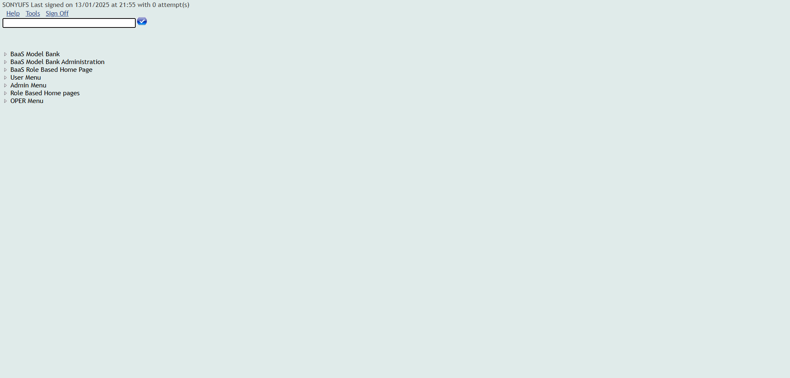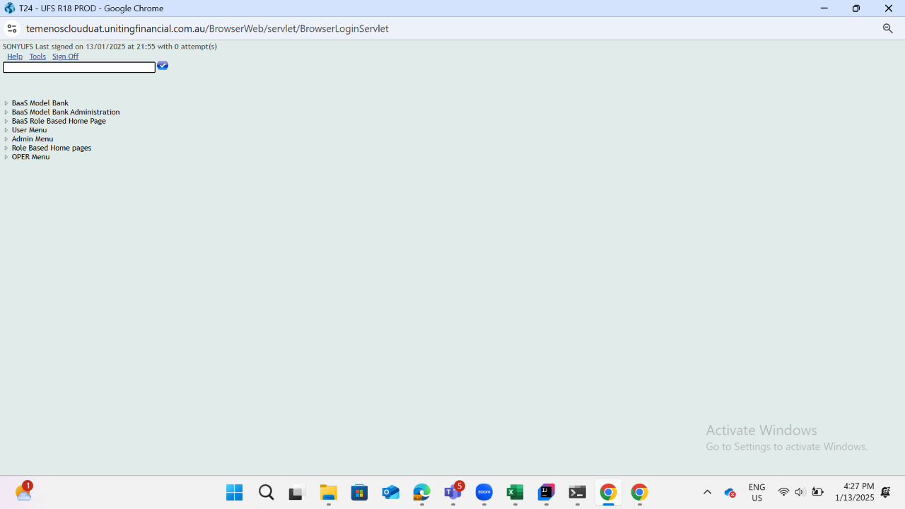Then The user should be able to fill the commandlineAnd user should be able to see the the balance of the account before performing internal transfercom.frameium.stepdef.Ufs.IBPayments.afterStep(io.cucumber.java.Scenario)com.frameium.stepdef.Hooks.afterEveryStep(io.cucumber.java.Scenario)Then The user should be able to navigate to Account transfer buttonStep skippedAnd Enter the details in the account transfer for External transfer overlimitStep skippedThen Click on validateStep skippedAnd Click on commitStep skippedThen check whether the override Authorisation Required message is appearing and click on acceptoverrideStep skippedThen Verify whether the transaction complete message is displayed after commitingStep skippedAnd The User clicks on signoffStep skippedThen Login to authoriser accountStep skippedThen The user should be able to fill the commandlineStep skippedAnd Navigate to unauthorised transactionsStep skippedThen Authorize the transactionStep skippedThen Verify whether the transaction complete message is displayed after commitingStep skippedAnd Navigate to account entriesStep skippedThen Enter the external overlimit account number and click on find buttonStep skippedAnd Verify whether the external overlimit transaction is reflected in the accountentriesStep skippedFailExternal Transfer overlimit narrativeWhen close all the other opened windowscom.frameium.stepdef.Ufs.IBPayments.afterStep(io.cucumber.java.Scenario)com.frameium.stepdef.Hooks.afterEveryStep(io.cucumber.java.Scenario)When User opens the T24 UrlStep skippedThen User should be able to login to T24Step skippedThen The user should be able to fill the commandlineStep skippedAnd The user should be able to click on general enquiries buttomStep skippedAnd click on the IB-view of account entriesStep skippedThen Enter the account number of external transfer overlimitStep skippedAnd click on find buttonStep skippedAnd The details of External transfer overlimit should be reflected in the narrativesStep skippedFailTwo way sweep transfer Balance maintenanceWhen close all the other opened windowscom.frameium.stepdef.Ufs.IBPayments.afterStep(io.cucumber.java.Scenario)com.frameium.stepdef.Hooks.afterEveryStep(io.cucumber.java.Scenario)When User opens the T24 UrlStep skippedThen User should be able to login to T24Step skippedThen The user should be able to fill the commandlineStep skippedAnd navigate to find account optionStep skippedThen open the account that Two way sweep transfer-BalanceMaintenance need to be appliedStep skippedAnd reverse sweep transfer if any Sweep transfer is there and switch back to main menuStep skippedThen navigate to operations menuStep skippedAnd click on sweep maintainanceStep skippedThen click on Setup Two Way SweepStep skippedAnd Enter the details Two way sweep BalanceMaintenanceStep skippedThen Click on validateStep skippedAnd Click on commitStep skippedThen Verify whether the transaction complete message is displayed after commitingStep skippedAnd navigate to find account optionStep skippedThen open the account that Two way sweep transfer-BalanceMaintenance need to be appliedStep skippedAnd verify that Two way sweep transfer-BalanceMaintenance is reflected in the overview pageStep skipped
-
java.lang.NullPointerException
1 tests
java.lang.NullPointerException
1 failedStatus Timestamp TestName Fail 16:23:28 PM And user should be able to see the the balance of the account before performing internal transfer Payment.Internal transfer.And user should be able to see the the balance of the account before performing internal transferFail 16:26:13 PM And click on the IB-view of account entries Payment.Internal Transfer narrative.And click on the IB-view of account entries -
org.openqa.selenium.NoSuchWindowException
1 tests
org.openqa.selenium.NoSuchWindowException
1 failedStatus Timestamp TestName Fail 16:27:40 PM And user should be able to see the the balance of the account before performing internal transfer Payment.External transfer over limit.And user should be able to see the the balance of the account before performing internal transferFail 16:28:06 PM com.frameium.stepdef.Ufs.IBPayments.afterStep(io.cucumber.java.Scenario) Payment.External transfer over limit.com.frameium.stepdef.Ufs.IBPayments.afterStep(io.cucumber.java.Scenario)Fail 16:28:07 PM com.frameium.stepdef.Hooks.afterEveryStep(io.cucumber.java.Scenario) Payment.External transfer over limit.com.frameium.stepdef.Hooks.afterEveryStep(io.cucumber.java.Scenario)Fail 16:28:11 PM When close all the other opened windows Payment.External Transfer overlimit narrative.When close all the other opened windowsFail 16:28:13 PM com.frameium.stepdef.Ufs.IBPayments.afterStep(io.cucumber.java.Scenario) Payment.External Transfer overlimit narrative.com.frameium.stepdef.Ufs.IBPayments.afterStep(io.cucumber.java.Scenario)Fail 16:28:13 PM com.frameium.stepdef.Hooks.afterEveryStep(io.cucumber.java.Scenario) Payment.External Transfer overlimit narrative.com.frameium.stepdef.Hooks.afterEveryStep(io.cucumber.java.Scenario)Fail 16:28:16 PM When close all the other opened windows Payment.Two way sweep transfer Balance maintenance.When close all the other opened windowsFail 16:28:17 PM com.frameium.stepdef.Ufs.IBPayments.afterStep(io.cucumber.java.Scenario) Payment.Two way sweep transfer Balance maintenance.com.frameium.stepdef.Ufs.IBPayments.afterStep(io.cucumber.java.Scenario)Fail 16:28:18 PM com.frameium.stepdef.Hooks.afterEveryStep(io.cucumber.java.Scenario) Payment.Two way sweep transfer Balance maintenance.com.frameium.stepdef.Hooks.afterEveryStep(io.cucumber.java.Scenario)
-
@firstday
5 tests
@firstday
5 failedStatus Timestamp TestName Fail 16:22:49 PM Internal transfer Payment.Internal transferFail 16:24:48 PM Internal Transfer narrative Payment.Internal Transfer narrativeFail 16:27:09 PM External transfer over limit Payment.External transfer over limitFail 16:28:10 PM External Transfer overlimit narrative Payment.External Transfer overlimit narrativeFail 16:28:16 PM Two way sweep transfer Balance maintenance Payment.Two way sweep transfer Balance maintenance
Started
Jan 13, 2025 04:22:41 PM
Ended
Jan 13, 2025 04:28:20 PM
Features Passed
0
Features Failed
1
Features
Scenarios
Steps
Timeline
Tags
| Name | Passed | Failed | Skipped | Others | Passed % |
|---|---|---|---|---|---|
| @firstday | 0 | 5 | 0 | 0 | 0% |